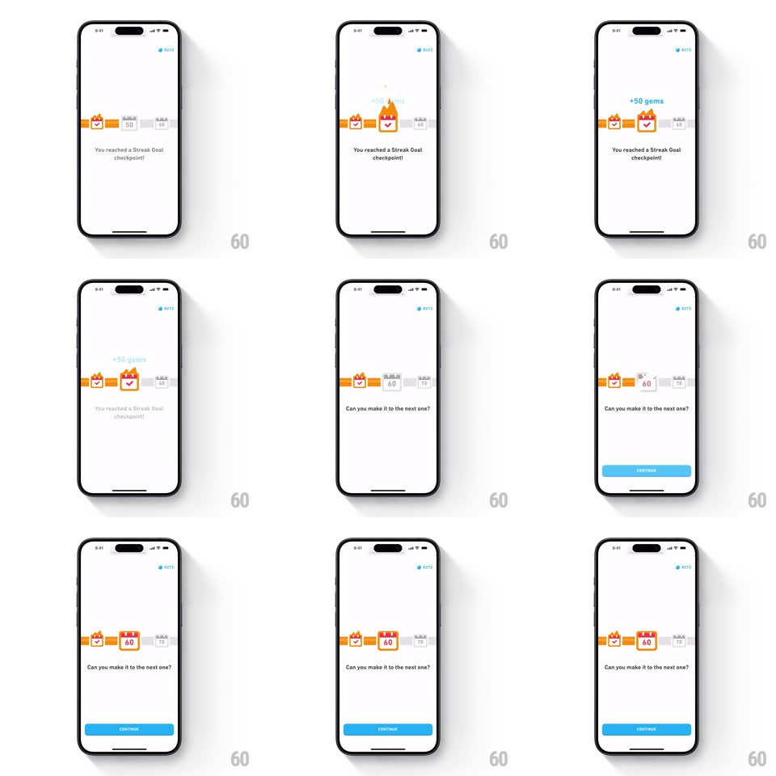

Media
Frame-by-frame

Rebuild this animation 1:1: Duolingo's streak goal checkpoint - the day-50 chest on the streak path bursts into a checked flame chest with "+50 gems" while the gem counter ticks up, then the path slides to the next goal with "Can you make it to the next one?".

Rebuild this animation 1:1: Duolingo's streak goal checkpoint - the day-50 chest on the streak path bursts into a checked flame chest with "+50 gems" while the gem counter ticks up, then the path slides to the next goal with "Can you make it to the next one?". ## Integration Integration: stack-agnostic spec - springs given as stiffness/damping, timed motions as duration + curve; map every value to your framework and animation library of choice. ## Scene White screen: a horizontal streak path with nodes (day 40 chest, day 50 chest, locked day 60), a gem counter top-right, the message "You reached a Streak Goal checkpoint!", later "Can you make it to the next one?", and a CONTINUE pill. ## Motion spec Pattern: checkpoint reward sequence, ~2.4s. - Arrival: the path slides left until the day-50 chest is centered (400ms, ease-out); the copy fades in. - Reward: the chest pops open (scale 1 -> 1.2 -> 1, spring ~420/16) swapping to a checked flame variant as "+50 gems" floats up (rise 40px, fade, 700ms). - Counter: the gem total ticks up by 50 (rolling digits, 500ms, ease-out). - Advance: the path slides again to reveal the locked day-60 node (spring ~300/24, 400ms) as the copy crossfades to "Can you make it to the next one?" (250ms). - CONTINUE fades up (250ms) last. ## Calibration - The counter ticks exactly with the float - the gems land as the number moves. - Locked nodes are grey with padlocks; only the reached node animates. ## Reduced motion Chest swaps state with a fade; the path jumps to final position. ## Don't miss - The chest transformation is in place - it does not slide in. - Two distinct path slides: to the checkpoint, then past it.